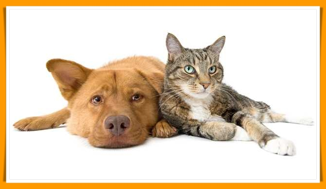
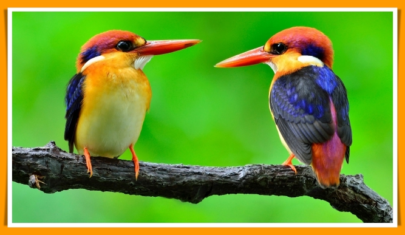
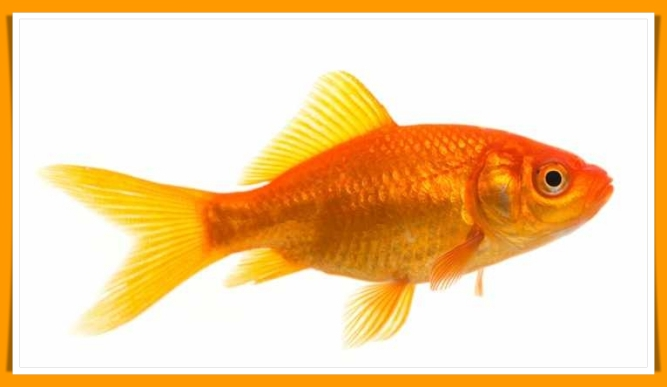
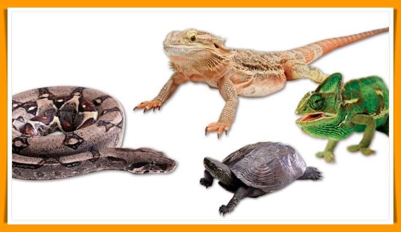
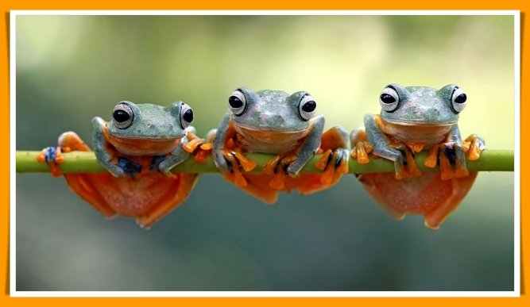
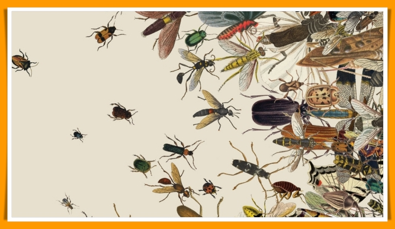

Animals are multicellular eukaryotic organisms that form the biological kingdom Animalia. With few exceptions, animals consume organic material, breathe oxygen, are able to move, can reproduce sexually, and grow from a hollow sphere of cells, the blastula, during embryonic development. Over 1.5 million living animal species have been described-of which around 1 million are insects-but it has been estimated there are over 7 million animal species in total. Animals range in length from 8.5 millionths of a metre to 33.6 metres (110 ft). They have complex interactions with each other and their environments, forming intricate food webs. The kingdom Animalia includes humans, but in colloquial use the term animal often refers only to non-human animals. The study of non-human animals is known as zoology.
3D Model (Touch and Rotate)
Animals are living things. Like plants, animals need food and water to live. Unlike plants, which make their own food, animals feed themselves by eating plants or other animals. Animals can also sense what goes on around them. Their bodies allow them to move in reaction to their surroundings. They use their senses and movement to find food, mates, and safety.
h
Types of Animals
3D Model (Touch and Rotate)
Millions of different kinds of animals live on Earth but they are usually divided to these categories:
Mammals

Mammals are animals that have hair or fur, have live babies instead of laying eggs, and feed their babies milk from the mother. Mammals are also warm-blooded, which means they make their own heat.
Some other mammals you might see are dogs, cats, and squirrels.
Birds

Did you know that all birds have wings, but not all birds can fly? Birds like penguins are called flightless birds.
All birds have feathers and a backbone, and they can make their own heat, so they are warm-blooded. Birds can be really tiny like the hummingbird, or huge like the ostrich, which is 9 feet tall. That's taller than an adult human!
Fish

The first true vertebrates on earth, fish evolved from invertebrate ancestors about 500 million years ago, and have dominated the world's oceans, lakes, and rivers ever since. There are three main types of fish: bony fish (which includes such familiar species as tuna and salmon); cartilaginous fish (which includes sharks, rays, and skates); and jawless fish (a small family made up entirely of hagfish and lampreys). Fish breathe using gills and are equipped with "lateral lines" that detect water currents and even electricity.
Reptiles

Reptiles are animals that are cold-blooded, which means that they do not make their own heat. This is why you might see a snake or lizard laying in the sun to warm up! Reptiles also lay eggs and have scales on their bodies.
Some reptiles you might know are turtles, snakes, and lizards like iguanas and geckos.
Amphibians

When the first amphibians evolved from their tetrapod ancestors, 400 million years ago, they quickly became the dominant vertebrates on earth. However, their reign wasn't destined to last; the frogs, toads, salamanders, and caecilians that make up this group have long since been out-competed by reptiles, birds, and mammals. Amphibians are characterized by their semi-aquatic lifestyles (they have to stay near bodies of water, both to maintain the moisture of their skin and to lay their eggs).
Insects

Insects are animals, and they form a group called a class within the kingdom Animalia.
The most recognisable are the butterflies, moths, beetles, bees, wasps, ants, dragonflies, flies, grasshoppers, and bugs.